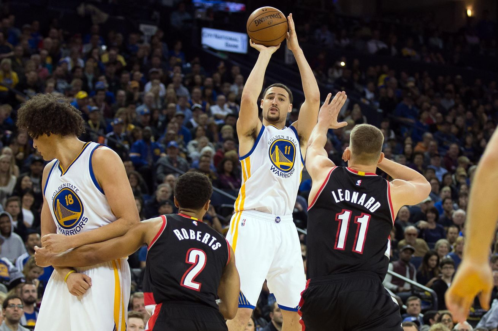
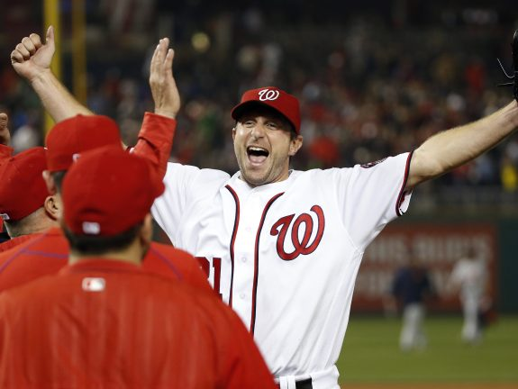

Hall of Fame defensive end Bruce Smith
The Buffalo Bills will retire Hall of Fame defensive end Bruce Smith's No. 78 during their 2016 home opener in Week 2.
Warriors moving on to the WCF!
Golden State Warriors come up with a win against Portland Trail Blazers moving on the the Western Conference Finals
Max Scherzer
Washington Nationals' Max Scherzer ties MLB record with 20 strikeouts in 9-inning game; 3-2 victory over Tigers - FOX 5 DC.